Azure Networking Specialty Daily Interactive Study Report
Report date: September 9, 2026. Certification alignment: Microsoft Certified: Azure Network Engineer Associate / AZ-700. Microsoft’s current AZ-700 skills outline is measured as of July 27, 2026.
Today’s 12 lessons
- ExpressRoute gateway migration to availability-zone-enabled SKUs
- VPN Gateway packet capture at the managed tunnel edge
- Azure Virtual Network Manager IPAM
- Azure VNet IPv6 dual-stack design
- Azure Global Load Balancer
- Application Gateway connection draining
- Front Door health probes and origin selection
- Network Watcher VPN troubleshoot
- Azure service tags in network policy
- Private endpoint network policies and inspection
- Azure Bastion Shareable Links
- Azure Firewall Threat Intelligence
ExpressRoute gateway migration to availability-zone-enabled SKUs
Why it matters
An ExpressRoute circuit can be highly resilient while the virtual network gateway that connects a VNet to that circuit remains an older, non-zone-enabled component. That distinction matters because the circuit and the gateway protect different failure domains. Microsoft’s guided migration process lets you move an eligible ExpressRoute virtual network gateway to an availability-zone-enabled gateway without deleting the circuit or rebuilding every connection from scratch. The objective is not merely a SKU rename. It is a staged replacement of the gateway resource while preserving a controlled rollback point until the new gateway has proved that it can carry the existing ExpressRoute connections.
The operational advantage comes from the migration phases. Prepare creates the new gateway in the existing GatewaySubnet and associates it with the existing ExpressRoute connectivity. Migrate transfers the working configuration and moves traffic to the new gateway. Commit removes the old gateway only after validation. This is fundamentally safer than a delete-and-recreate procedure because the old gateway remains a recovery anchor during most of the process. Microsoft notes that the migration can still cause a brief interruption, so the change belongs in a controlled window with application validation rather than being treated as a zero-impact metadata update.
Architecture
The ExpressRoute circuit is the private WAN service, while the ExpressRoute virtual network gateway is the VNet-side routing endpoint. During preparation, both the old gateway and a new availability-zone-enabled gateway exist in the same VNet context. The migration tooling creates the replacement gateway and preserves the circuit relationships needed for the next phase. The important control-plane evidence is therefore not only provisioningState=Succeeded; you must also confirm that the new gateway is associated with the expected circuit connections and that learned/advertised routes are present before traffic is committed.
On the data plane, on-premises traffic still arrives across the same ExpressRoute circuit. What changes is the VNet-side gateway handling that traffic. A routing outage after the migrate phase can result from a connection that did not transfer cleanly, BGP convergence, an incompatible legacy property, or an application path that depended on the old gateway’s behavior. Because the circuit itself can remain healthy, troubleshooting must distinguish “circuit is up” from “new VNet gateway is forwarding production traffic.” The migration diagram shows the circuit feeding the old and prepared new gateways until the cutover is validated.
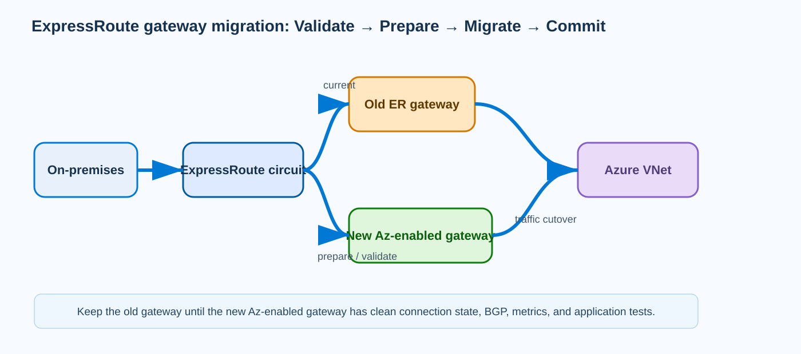
{kind=link}
Prerequisites and implementation
Inventory the existing gateway before touching it: gateway SKU, zone capability, GatewaySubnet capacity, all ExpressRoute connections, route tables, BGP state, FastPath usage, locks, policies, and monitoring baselines. Confirm the gateway is eligible for the documented migration path. The current Microsoft PowerShell procedure uses migration scripts published with the Azure documentation. Clone the sample repository into Cloud Shell or an administrative workstation, inspect the scripts, and capture the resource ID of the existing gateway. Preparation prompts for the original resource ID, a suffix for replacement resources, and the target availability zone. Do not commit immediately after the migration script finishes; run route, connection, metrics, and application checks first.
# Inspect the existing gateway and preserve its resource ID.
$old = Get-AzVirtualNetworkGateway -ResourceGroupName <rg> -Name <old-er-gateway>
$old.Id
$old.Sku
$old.ProvisioningState
# Microsoft-documented sample workflow.
git clone https://github.com/Azure/azure-docs-powershell-samples.git
cd azure-docs-powershell-samples/expressroute-gateway/gateway-migration/
# Creates the replacement gateway and prepares circuit connections.
.\PrepareMigration.ps1
# After preparation validation, transfer configuration/traffic.
.\Migration.ps1
# Only after production validation, remove old gateway/resources.
.\CommitMigration.ps1Replace the placeholders with the existing resource group and gateway name. Treat the scripts as a state machine: prepare is reversible, migrate is the cutover point, and commit removes the rollback gateway. If the organization uses infrastructure-as-code for the surrounding VNet, update that desired state so a later deployment does not attempt to recreate the retired gateway or overwrite the new SKU.
Verification
Validation should prove three things: Azure created the new gateway successfully, every required ExpressRoute connection points to a healthy gateway path, and representative application flows survive the cutover. Compare effective routes or gateway route information before and after, watch circuit/gateway metrics, and verify both directions of a known production prefix. The expected output below is representative, not byte-for-byte guaranteed.
Get-AzVirtualNetworkGateway -ResourceGroupName <rg> -Name <new-er-gateway> |
Select Name,ProvisioningState,GatewayType,Sku
Get-AzVirtualNetworkGatewayConnection -ResourceGroupName <rg> |
Select Name,ConnectionStatus,ProvisioningStateName ProvisioningState GatewayType Sku
---- ----------------- ----------- ---
ergw-zone Succeeded ExpressRoute ErGw2AZ
Name ConnectionStatus ProvisioningState
---- ---------------- -----------------
er-prod-circuit Connected SucceededTroubleshooting
If the new gateway shows Succeeded but the connection is NotConnected, do not assume the ExpressRoute provider failed. Compare the connection objects transferred by the migration, circuit authorization/peering health, and route state. If BGP routes are absent only through the new gateway, stop before commit and use the old gateway as the recovery path. A migrate-phase application outage with a Connected circuit should trigger inspection of effective routes, gateway metrics, and the exact affected prefixes rather than a circuit rebuild.
new gateway: ProvisioningState = Succeeded
connection: ConnectionStatus = NotConnected
on-prem CE: ExpressRoute BGP = Established
application probe: timeoutVPN Gateway packet capture at the managed tunnel edge
Why it matters
Azure VPN Gateway is managed, so you cannot log in to the gateway VM and run tcpdump as you would on a firewall appliance. Gateway packet capture fills that evidence gap by letting you capture packets at the Azure-managed VPN gateway. It is particularly useful for one-way traffic, suspected selector/NAT problems, intermittent retransmissions, or cases where the on-premises peer insists that traffic was sent but Azure workloads never see it. The capture is evidence from the Azure tunnel edge, not a generic VNet packet sniffer, so it should be used to answer a narrow question about what arrived at or left the gateway.
Packet capture is most valuable when correlated with evidence on both sides. If a packet appears on the on-premises firewall capture and on the Azure VPN Gateway capture but never reaches the destination VM, the fault is after tunnel processing—routing, security, NVA insertion, or the workload. If the peer transmits but the Azure gateway never captures the relevant traffic, investigate the Internet/underlay, IKE/IPsec selectors, NAT, or peer-side encapsulation. This method replaces argument-by-assumption with a three-point timeline: peer, managed gateway, and workload.
Architecture
The gateway terminates IKE/IPsec and connects the tunnel to Azure VNet routing. A capture filter limits the amount of data by matching selected addresses, ports, or packet directions. You start the capture against the managed gateway, reproduce the problem, and stop the capture while providing a storage destination/SAS URI so the PCAP can be analyzed with Wireshark or another packet-analysis tool. The capture should be short and scenario-specific. Long unfiltered captures create unnecessary data and can make the key handshake or packet sequence harder to find.
Understand the encryption boundary when interpreting the PCAP. Depending on capture point and gateway behavior, you may observe outer tunnel traffic or traffic as processed at the managed edge. The capture does not automatically prove that a route to the destination exists or that an NSG allows the packet after it leaves the gateway. For a one-way TCP failure, combine gateway PCAP with effective routes, IP Flow Verify/NSG diagnostics, and a workload-side capture. The architecture diagram emphasizes that the PCAP is one observation point in an end-to-end path rather than a replacement for the other diagnostics.
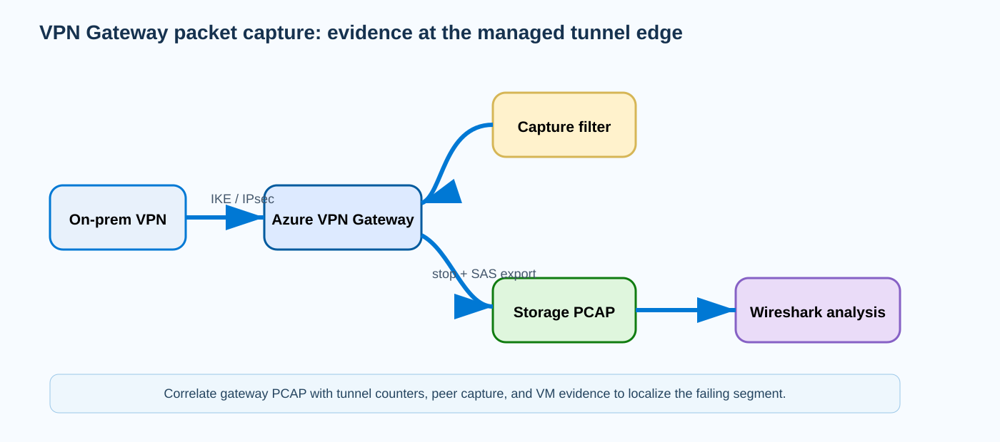
{kind=link}
Prerequisites and implementation
Confirm the gateway type/SKU supports packet capture, select a short reproduction window, and prepare a storage account/container for the exported capture. Record the exact source/destination tuple before starting. If you suspect NAT or traffic-selector behavior, record both original and translated prefixes so you know which addresses to search for. Microsoft documents PowerShell cmdlets for starting and stopping gateway capture. Use a restrictive filter whenever possible and never expose long-lived storage SAS credentials in source control.
$gw = Get-AzVirtualNetworkGateway -ResourceGroupName <rg> -Name <vpn-gateway>
# Start a short, filtered capture using the documented packet-capture workflow.
Start-AzVirtualNetworkGatewayPacketCapture `
-ResourceGroupName <rg> `
-Name <vpn-gateway> `
-FilterData '<documented-filter-json-for-source-destination>'
# Reproduce the failing flow, then stop and export to a SAS URL.
Stop-AzVirtualNetworkGatewayPacketCapture `
-ResourceGroupName <rg> `
-Name <vpn-gateway> `
-SasUrl '<storage-container-sas-url>'The filter JSON must follow the current Microsoft schema; do not invent fields. For a maintenance run, pre-create the storage container, generate a time-limited write-capable SAS, start capture immediately before the test, stop it as soon as the failure is reproduced, and download the PCAP to an analysis workstation.
Verification
A successful capture operation should return a capture/session result without an Azure resource error, and stopping should produce a PCAP object in the intended storage location. In Wireshark, confirm that the expected source/destination addresses and protocol appear during the reproduction timestamp. If a TCP SYN and SYN/ACK are both visible at the gateway, tunnel transport is not the cause of an application timeout farther inside the VNet.
Start capture: Succeeded
Stop capture: Succeeded
Storage object: vpn-gateway-capture.pcap
Wireshark filter: ip.addr == 10.20.10.15 && ip.addr == 10.60.4.20
Observed: TCP SYN ->, SYN/ACK <-, ACK ->Troubleshooting
If the capture file is empty, first confirm the correct gateway, time window, address translation, and filter rather than declaring the tunnel broken. If peer PCAP shows encrypted packets leaving but Azure gateway capture shows none for the corresponding flow, inspect peer selectors, NAT, public-IP reachability, and tunnel counters. If Azure gateway capture shows the inbound packet but workload capture does not, move inward: verify route next hop, NSG/admin rules, firewall policy, and return routes. For intermittent failures, timestamp captures on both sides and compare sequence numbers/retransmissions.
Peer capture: SYN sent to Azure protected prefix
Azure VPN Gateway PCAP: SYN present
VM packet capture: no SYN
Effective route: destination prefix -> VirtualAppliance 10.50.0.4Azure Virtual Network Manager IPAM: hierarchical, non-overlapping address allocation
Why it matters
Large Azure estates fail address planning long before they run out of RFC1918 space. The common problem is decentralized allocation: teams pick convenient CIDRs, later discover overlap with another VNet or an on-premises network, and then cannot peer, connect through Virtual WAN, or advertise routes cleanly. Azure Virtual Network Manager IP address management (IPAM) addresses the governance problem by creating centrally managed pools and allocating VNet address spaces from those pools. Instead of treating a spreadsheet as the authority, the platform tracks allocated, available, and statically reserved address space.
IPAM matters most in environments where platform teams delegate address ownership. A root pool can represent an enterprise supernet, child pools can represent regions or business units, and allocations can feed individual VNets. Static CIDR reservations are equally important because not every address is created by IPAM: existing VNets, on-premises networks, acquisitions, and future reservations must be marked as consumed so an automatic allocator does not hand the same space to a new workload. The design goal is conflict prevention before deployment, not discovery after routing is broken.
Architecture
Think of IPAM as a control-plane allocator above normal VNet networking. A root pool owns one or more address ranges. Child pools carve portions of that parent and can be delegated to a scope. A VNet allocation requests a CIDR of a given size from an eligible pool; AVNM selects a non-overlapping block and records the allocation. Once the VNet receives its prefix, ordinary Azure routing, peering, NSGs, service endpoints, Private Link, and gateways operate exactly as they do for manually assigned address space. IPAM does not become a data-path hop.
This separation is important during troubleshooting. If a VNet was allocated 10.80.32.0/20 successfully but cannot reach on-premises, the runtime route problem is not “inside IPAM.” IPAM’s job was to guarantee the allocation met pool rules and did not conflict with tracked ranges. Conversely, if a new VNet deployment fails because no /20 can be allocated, changing route tables is irrelevant; inspect pool fragmentation, hierarchy, static reservations, and allocation scope. Current Microsoft documentation also describes region availability limitations, so confirm IPAM availability before using it as a global deployment dependency.
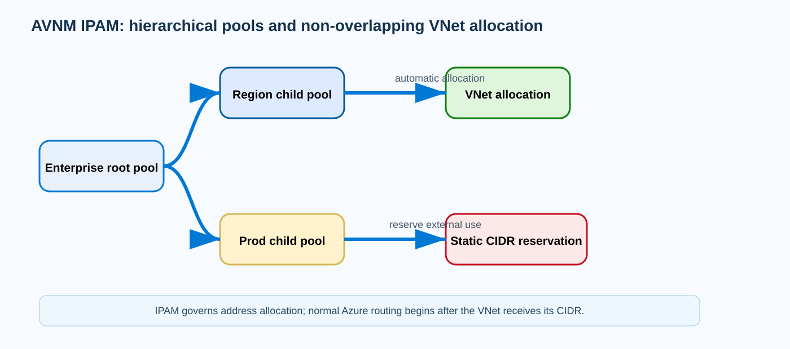
{kind=link}
Prerequisites and implementation
Create an Azure Virtual Network Manager with IPAM capability at an appropriate management scope. Define root pools only after reconciling current enterprise allocations; importing a supernet that overlaps untracked production networks defeats the control. Use child pools to express administrative boundaries and reserve CIDRs representing existing or external consumption. Microsoft publishes a Bicep deployment guide that creates the network manager, IPAM pools, static CIDRs, associations, and VNets that automatically receive allocations. Bicep is appropriate here because the resources form a declarative hierarchy and the exact provider schema is documented.
// Conceptual excerpt: use current Microsoft.Network provider versions from the Learn sample.
resource networkManager 'Microsoft.Network/networkManagers@<current-api>' = {
name: '<network-manager>'
location: '<region>'
properties: {
networkManagerScopeAccesses: [ 'Connectivity' 'SecurityAdmin' ]
}
}
// Define a root IPAM pool, then child pools/static CIDRs using the
// current AVNM IPAM resource types from Microsoft's Bicep sample.
// Associate existing VNets or request automatic CIDR allocation
// for new VNets from the intended child pool.Do not guess IPAM resource names or API versions from older previews. Use Microsoft’s current Bicep sample as the implementation contract, parameterize pool CIDRs and allocation sizes, then run az deployment sub what-if or the correct management-group/subscription deployment scope before applying changes.
Verification
Verification is primarily allocation evidence. In the portal or Resource Graph/API view, confirm the root/child hierarchy, free versus allocated address space, static reservations, and the VNet association. Then query the VNet itself to prove the allocated CIDR became real VNet address space. A successful allocation should not overlap any reserved pool range.
az network vnet show -g <rg> -n <vnet> --query "addressSpace.addressPrefixes" -o json
az deployment sub show -n <ipam-deployment> --query properties.provisioningState -o tsvDeployment: Succeeded
VNet addressPrefixes:
[
"10.80.32.0/20"
]
IPAM allocation: Allocated
Parent child-pool: eastus-prod
Overlap conflicts: noneTroubleshooting
An allocation failure normally means governance constraints cannot be satisfied. Inspect requested prefix length, remaining contiguous blocks, child-pool bounds, and static reservations. Fragmentation can leave plenty of total addresses but no single sufficiently large block. If a manually created VNet overlaps a pool because it was never associated or reserved, add a static CIDR reservation before enabling automatic allocations. For deployment errors, inspect the ARM/Bicep deployment operation instead of experimenting with VNet routes.
DeploymentState: Failed
Requested allocation: /20
Pool available total: 8192 addresses
Largest contiguous free block: /22
Result: no eligible CIDRAzure VNet IPv6 dual-stack: treat IPv6 as a first-class forwarding path
Why it matters
Adding IPv6 to an Azure workload is not the same as translating an IPv4 design. Azure dual-stack VNets let resources use IPv4 and IPv6 simultaneously, but each protocol has its own addresses, routes, DNS records, security matching, listener behavior, and external reachability. A workload that is perfectly secure and reachable over IPv4 can be unreachable—or unintentionally exposed—over IPv6 if the second protocol was added only at the address layer. The practical objective is parity: every important design decision made for IPv4 must be deliberately reviewed for IPv6.
Azure imposes an important subnet rule: every IPv6 subnet prefix is /64. That is not a sizing suggestion; it is the IPv6 subnet shape the platform expects. Microsoft also documents limitations around IPv6-only deployment patterns, so production architectures normally use dual stack rather than assuming a VM/VMSS can be created as pure IPv6. DNS becomes part of cutover strategy because publishing an AAAA record causes capable clients to attempt IPv6. A phased deployment therefore validates IPv6 end-to-end before broadly advertising AAAA.
Architecture
A dual-stack VNet has IPv4 and IPv6 address spaces, and a dual-stack subnet receives an IPv4 prefix plus an IPv6 /64. A NIC can have IPv4 and IPv6 IP configurations. Public exposure may involve corresponding IPv4/IPv6 frontend addresses on supported load balancers or public IP resources. Inside the guest OS, the application must actually bind to IPv6 or to a wildcard socket that includes IPv6; assigning an IPv6 address to the NIC does not make a service listen on it.
Routing is protocol-specific. An IPv4 UDR does not create an IPv6 route. An NSG rule using IPv4 prefixes does not automatically express the corresponding IPv6 policy. Likewise, a DNS A record and AAAA record can steer clients to different network paths. This makes dual-stack troubleshooting highly deterministic: first identify whether the failing client selected A or AAAA, then inspect only that protocol’s effective route, NSG decision, frontend/listener, and return path. The architecture diagram shows the IPv4/IPv6 Internet feeding the VNet, subnet, NIC, and guest as separate parallel identities.
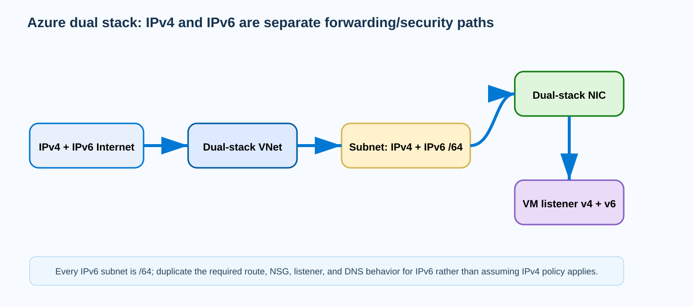
{kind=link}
Prerequisites and implementation
Choose a global IPv6 prefix appropriate for the Azure design, add it to the VNet, and add an IPv6 /64 to each dual-stack subnet that needs IPv6. Then create IPv6 NIC IP configurations and, when external connectivity is required, supported IPv6 public/load-balancer frontends. Replicate security intent explicitly. If the IPv4 rule allows TCP/443 from a known management network, decide the IPv6 source scope rather than using an overly broad Internet rule for convenience.
# Add an IPv6 address space to an existing VNet.
az network vnet update -g <rg> -n <vnet> \
--add addressSpace.addressPrefixes <ipv6-vnet-prefix>
# Add the required /64 IPv6 prefix to a subnet.
az network vnet subnet update -g <rg> --vnet-name <vnet> -n <subnet> \
--address-prefixes <ipv4-subnet-prefix> <ipv6-subnet-/64>
# Create an IPv6 NIC IP configuration using the current CLI syntax.
az network nic ip-config create -g <rg> --nic-name <nic> \
-n <ipv6-ipconfig> --private-ip-address-version IPv6After Azure configuration, enable the guest listener and firewall for IPv6 and test privately before publishing AAAA. If a load balancer is used, create the supported IPv6 frontend and rule rather than assuming the IPv4 frontend accepts both protocols.
Verification
Verify Azure allocation, guest binding, DNS, and application reachability separately. The NIC should show both IPv4 and IPv6 configurations. DNS should return AAAA only when you intend clients to use IPv6. From a test host, curl -6 or an IPv6 TCP probe should succeed while effective NSG and route evidence match the expected path.
az network nic show -g <rg> -n <nic> --query "ipConfigurations[].{name:name,version:privateIPAddressVersion,ip:privateIPAddress}" -o table
nslookup -type=AAAA <app-fqdn>
# Linux workload:
ss -lntp | grep ':443'Name Version Ip
--------- ------- -------------------------
ipconfig1 IPv4 10.40.1.10
ipconfig6 IPv6 2603:1030:...:10
AAAA 2603:1030:...:10
LISTEN [::]:443Troubleshooting
If A works but AAAA fails, do not change IPv4 settings. Confirm the AAAA address maps to the intended frontend/NIC, the guest is listening on IPv6, an IPv6 NSG rule permits the flow, and an IPv6 route/return route exists. A common application symptom is a browser that pauses because it prefers IPv6 and then falls back to IPv4. Removing AAAA can be an emergency rollback, but the technical fix is to restore IPv6 path parity.
DNS A: 20.50.60.70
DNS AAAA: 2603:1030:...:70
curl -4 https://app: HTTP 200
curl -6 https://app: timeout
VM: LISTEN 0 4096 0.0.0.0:443 (no [::]:443)Azure Global Load Balancer: one anycast frontend over regional Standard Load Balancers
Why it matters
Regional Standard Load Balancer is excellent for Layer-4 distribution inside a region, but a multi-region TCP/UDP service needs a mechanism to choose a healthy region. Azure Global Load Balancer, also called cross-region Load Balancer, adds a global tier with a static anycast frontend IP and regional Standard Load Balancers as backends. Clients keep one IP while Azure directs flows to an eligible regional frontend based on global load-balancing behavior. This is different from Traffic Manager, which returns DNS answers, and different from Front Door, which is an HTTP/HTTPS reverse proxy.
The design is useful when applications require a stable L4 IP rather than DNS-based steering. However, the global tier does not replace the regional tier. Regional load balancers still own backend pools, probes, outbound SNAT decisions, and application-level capacity. Microsoft documents important limitations: the global load balancer is public, not an internal/private global ILB; outbound rules are not provided at the global tier; NAT64 is not supported there; and protocols/features unsupported by the global service cannot be assumed to pass simply because the regional LB supports them.
Architecture
The public anycast IP is announced from Microsoft’s network. A new client flow reaches the global load balancer, which selects a healthy regional load-balancer frontend. The regional Standard Load Balancer then applies its own rule and probe state to choose an actual backend VM, VMSS instance, or appliance. Failure is hierarchical: if a VM fails, the regional probe removes it; if an entire regional frontend becomes unhealthy/unreachable, the global tier steers new flows to another regional load balancer.
This hierarchy affects observability. A client timeout can be caused by the global frontend, regional backend reference, regional probe, regional LB rule, NSG, or application. Therefore, verify from outside inward. First confirm the global frontend/rule exists and references the expected regional frontends. Next confirm each regional load balancer is healthy independently. Finally test the workload. Cross-subscription backend configurations are supported in documented patterns, but that adds RBAC and resource-ID correctness to the control plane.
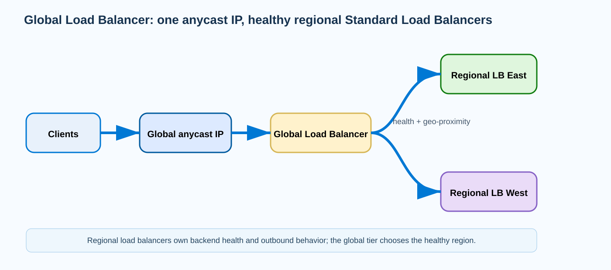
{kind=link}
Prerequisites and implementation
Build and validate each regional Standard Load Balancer first. Each must have the intended public frontend, backend pool, health probe, and load-balancing rule. Only then create the global load balancer and add regional frontend IP configurations as its backend members. For cross-subscription designs, grant the required permissions before referencing regional resources. Keep outbound design regional—NAT Gateway, regional outbound rules, or another supported method—because the global frontend does not become an outbound SNAT solution.
# Inspect regional LBs first.
az network lb show -g <east-rg> -n <east-lb> -o jsonc
az network lb show -g <west-rg> -n <west-lb> -o jsonc
# Use the current Microsoft cross-region Load Balancer CLI/portal workflow
# to create a GLOBAL-tier public frontend and reference the regional
# Standard Load Balancer frontend configurations as the global backend pool.
# For cross-subscription backends, use full resource IDs and documented RBAC.Because the exact CLI group evolves, follow the current cross-region Load Balancer Learn procedure rather than reusing a regional az network lb command with guessed flags. In infrastructure-as-code, model the regional frontends as dependencies of the global backend definitions and prevent a global deployment from racing ahead of regional readiness.
Verification
Verify the global frontend IP is allocated, the global rule references all intended regional frontends, and both regional load balancers report healthy backend instances. From multiple test locations, connect to the global IP and log which region accepted the connection. During a controlled failover, remove one regional path from health and confirm new connections land in the remaining region while regional monitoring shows why the first region was removed.
Global frontend: 20.30.40.50 (Static, Global tier)
Global backend members:
east-lb/frontend: Healthy
west-lb/frontend: Healthy
East regional backend health: 4/4 Healthy
West regional backend health: 4/4 Healthy
Client TCP test to 20.30.40.50: connectedTroubleshooting
If only one region receives traffic, test the regional load balancer directly before changing global policy. A regional frontend that exists but has no healthy backends is not a useful global destination. If both regions are healthy yet the global IP fails, inspect global rule/frontend provisioning and whether the protocol is supported. If applications can accept inbound traffic but cannot initiate outbound connections, troubleshoot regional SNAT/NAT—global Load Balancer does not supply outbound rules.
Global member east: Healthy
Global member west: Unhealthy
West regional LB rule: Succeeded
West backend probe: 0/4 Healthy
Application Gateway connection draining: graceful backend removal during deployments
Why it matters
Removing a backend from service sounds simple until a user is halfway through a long download, WebSocket-style session, or stateful HTTP transaction. Application Gateway connection draining gives a deregistering backend a grace period for existing connections while new requests are directed to other healthy backends. This is a deployment and scale-in safety mechanism, not a health-probe replacement. It is especially important for rolling upgrades where the platform or deployment orchestrator removes an instance from the backend pool before shutting it down.
The timeout must reflect the application. Microsoft currently supports a configured draining timeout from 1 through 3,600 seconds; setting 0 disables draining. A timeout that is shorter than the longest expected transfer simply moves the failure to a later point: the gateway eventually terminates the remaining connection. Microsoft explicitly notes a configuration-update limitation where ongoing connections can terminate after the draining timeout. For large downloads, a five-minute default choice can therefore be insufficient even though ordinary page requests are fine.
Architecture
Connection draining is configured on the Application Gateway backend HTTP setting. When a backend is deregistered, Application Gateway stops assigning new requests to that backend but allows qualifying existing connections to continue until they complete or the timeout expires. New requests go to other eligible pool members. Session affinity complicates the story because a client bound to a deregistering instance may continue to have requests associated with that backend according to documented behavior, so test your real affinity pattern rather than assuming every request instantly moves.
Health probes and draining solve different problems. A backend that fails its health probe is considered unhealthy; connection draining is about intentional deregistration/removal. During a rolling deployment, you want the new version to become healthy before the old version is removed, then drain the old instance. If you simply stop the application first, existing sessions fail regardless of the gateway’s configured grace period because the backend itself is no longer serving them.
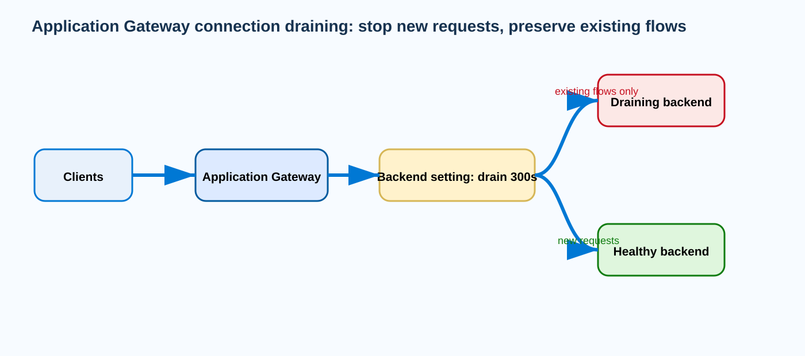
{kind=link}
Prerequisites and implementation
Measure real connection durations first. Use access logs or application telemetry to find the 95th/99th percentile for downloads, uploads, streaming, and long-running APIs. Choose a timeout that exceeds the legitimate maximum you intend to preserve but is not so long that unhealthy or obsolete instances linger indefinitely. Ensure at least one replacement backend is healthy before initiating removal. Then update the backend HTTP setting with Azure CLI.
# Inspect current backend settings.
az network application-gateway http-settings show \
-g <rg> --gateway-name <appgw> -n <backend-setting> -o jsonc
# Enable a 15-minute drain window.
az network application-gateway http-settings update \
-g <rg> --gateway-name <appgw> -n <backend-setting> \
--connection-draining-timeout 900Use 0 only when you intentionally want draining disabled. When automating rolling maintenance, sequence it explicitly: add/health-check replacement, remove old backend from active rotation, wait for drain completion, then stop or patch the old workload. Do not conflate “backend removed from pool” with “VM stopped.”
Verification
Inspect the backend setting to confirm the configured timeout, then run two tests during a controlled removal: one long-running connection that begins before deregistration and one new connection after deregistration. The existing connection should continue up to the grace limit while the new request is handled by a different healthy backend. Application Gateway access logs should show the backend server used by each request.
az network application-gateway http-settings show \
-g <rg> --gateway-name <appgw> -n <backend-setting> \
--query "connectionDraining" -o json{
"enabled": true,
"drainTimeoutInSec": 900
}
Test A (started before removal): completes successfully on backend-a
Test B (started after removal): served by backend-bTroubleshooting
Intermittent 502 errors during deployments often mean the backend disappeared before the gateway finished draining or the timeout is shorter than the longest active request. Correlate the deployment timestamp, backend-health transitions, access-log backend server field, and request duration. If a 20-minute download fails at exactly 15 minutes with a 900-second drain setting, the behavior is expected; increase the timeout above the required transfer duration or redesign the transfer.
drainTimeoutInSec: 300
large download duration: 780 seconds
backend removed at 10:00:00
client connection reset near 10:05:00
Application Gateway 502s appear during rolling updateAzure Front Door health probes and origin selection: understand the ordered decision
Why it matters
Front Door can have multiple origins, but “load balance them” hides several distinct decisions. Azure Front Door first determines which origins are healthy using distributed health probes. It then applies origin-group selection logic involving priority, latency sensitivity, weight, and optional session affinity. If you troubleshoot only weight, you can miss the real cause: an origin excluded by health or priority never reaches the weighting stage. A reliable design therefore starts with probe semantics before tuning traffic percentages.
Health probes are real HTTP/HTTPS requests generated from Front Door points of presence. Microsoft considers a 200 response healthy. New profiles use HEAD by default for probe efficiency, which matters because some applications implement GET correctly but return 405/404 for HEAD. Origin groups also use a sample size and required successful samples to smooth transient failures. Setting these values too aggressively can flap an origin; setting them too leniently can keep a failing origin eligible longer than the business wants.
Architecture
Each enabled origin is probed. The origin group evaluates recent samples and marks an origin healthy or unhealthy. Routing then narrows candidates by priority: lower numeric priority represents more preferred origin sets. Among eligible origins at the selected priority, Front Door can use latency sensitivity to keep only sufficiently fast origins, then weight to distribute traffic. Session affinity, when enabled, tries to keep a client with the selected origin using cookies. The sequence means a lower-priority disaster-recovery origin can remain healthy without receiving ordinary traffic until the primary priority tier loses eligibility.
An unusual but important behavior occurs when all origins are unhealthy. Front Door does not necessarily blackhole all requests; Microsoft documents fallback behavior that can distribute across origins so the service has a chance to recover or serve traffic despite probe failure. This makes probe failure different from administrative disablement. For applications where the probe path is intentionally more strict than user traffic, understand the resulting fallback before assuming “unhealthy” equals “never receives a request.”
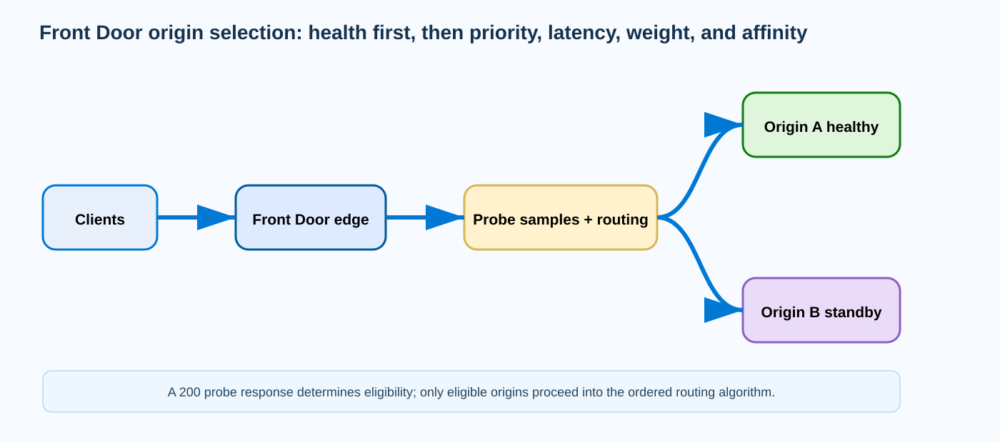
{kind=link}
Prerequisites and implementation
Create a probe endpoint that is cheap, deterministic, and representative of the dependencies that must be healthy for the application to serve. Do not point probes to an expensive page that queries dozens of downstream systems unless you intentionally want those systems to remove the origin. Make sure HEAD is supported if you use it; otherwise configure GET. Then set sample size, successful-sample threshold, interval, protocol, and path on the origin group. Configure priority/weight only after health behavior is understood.
# Inspect the origin group.
az afd origin-group show -g <rg> --profile-name <profile> \
--origin-group-name <group> -o jsonc
# Configure probe behavior using current Azure CLI parameters.
az afd origin-group update -g <rg> --profile-name <profile> \
--origin-group-name <group> \
--probe-request-type HEAD \
--probe-protocol Https \
--probe-path /health \
--probe-interval-in-seconds 30 \
--sample-size 4 \
--successful-samples-required 3For active/passive designs, set the primary origins to priority 1 and the recovery origins to a higher priority. For active/active designs, keep them in the same priority group and use weight only for intended distribution, remembering that health and latency can still alter observed percentages.
Verification
Use Front Door metrics/origin health plus direct probe-path testing. From a tool that preserves the expected Host header, call each origin’s health path and verify HTTP 200 for HEAD/GET exactly as Front Door uses it. Then inspect origin priority/weight and generate enough requests to observe the expected region selection. A single request cannot validate weighted distribution.
Origin A: Enabled, Priority 1, Weight 1000, Health = Healthy
Origin B: Enabled, Priority 2, Weight 1000, Health = Healthy
HEAD https://origin-a/health -> 200
Primary traffic -> Origin A
After Origin A probe fails threshold -> new traffic -> Origin BTroubleshooting
If an origin is unexpectedly unused, inspect health and priority before weight. A weight of 1000 is irrelevant if the origin is unhealthy or in a lower-priority tier while a healthy higher-priority origin exists. If probes return 405, compare HEAD versus GET. If health flaps during brief application restarts, adjust probe endpoint behavior or sample thresholds rather than masking failures with extreme weight changes. When every origin reports unhealthy but some traffic still appears, remember the documented all-unhealthy fallback behavior.
Origin A priority=1 weight=1000 health=Unhealthy
Origin B priority=2 weight=50 health=Healthy
Probe A: HEAD /health -> 405 Method Not Allowed
User traffic: all new requests reach Origin BNetwork Watcher VPN troubleshoot: on-demand managed diagnostics for gateways and connections
Why it matters
VPN Gateway exposes many signals—connection state, bytes, BGP, logs, packet capture—but an operator still needs a quick way to ask Azure whether a managed gateway or VPN connection has a known health problem. Network Watcher VPN troubleshoot runs a long-running diagnostic job against a VPN virtual network gateway or connection and returns a high-level Healthy or UnHealthy result plus action guidance. It also writes detailed diagnostic files to a storage container. This is useful as an early triage step because it can surface Azure-side conditions without waiting for manual correlation of every log source.
The tool should not be confused with continuous monitoring. It is an on-demand troubleshooting operation. You invoke it while the problem exists, wait for the job to finish, read the health/action result, and then inspect the stored logs if needed. For recurring or historical incidents, Azure Monitor diagnostic settings, VPN Gateway logs, metrics, and external peer telemetry are still required. A successful troubleshoot result also does not prove an application path is good; it only says the diagnosed gateway/connection did not expose the specific problem classes detected by the tool.
Architecture
Network Watcher must be enabled in the same region as the VPN gateway. You point the troubleshoot request at either the gateway resource or a VPN connection resource and provide a Storage account/container path. The backend diagnostic job gathers managed gateway/connection information and produces a health result. Detailed files are persisted in Storage so they can be reviewed after the long-running request completes. This separation is important in restricted environments: Network Watcher executes the diagnostic, while Storage holds the artifacts.
For a site-to-site tunnel outage, use the connection as the target when you want a connection-specific result and the gateway when you suspect broader gateway behavior. Then correlate the result with the on-premises peer. An UnHealthy result that points to configuration or connectivity should guide the next check; a Healthy result with an application outage should move you toward BGP/effective routes, selectors/NAT, NSGs, and workloads rather than repeatedly rerunning the same health job.
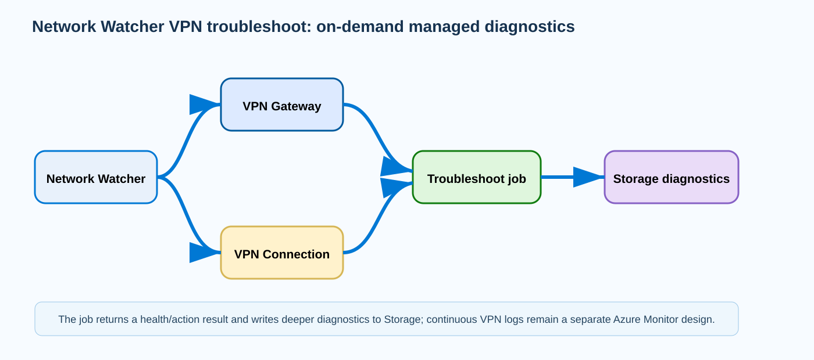
{kind=link}
Prerequisites and implementation
Confirm Network Watcher exists in the gateway region. Create or identify a Storage account and container, and make sure the executing identity can read the VPN resource and write the required diagnostic output. Microsoft’s current Azure CLI procedure creates the storage resources and invokes az network watcher troubleshooting start. The operation can take several minutes, so do not script it with an unrealistically short client timeout.
az storage account create --name <storage> --resource-group <rg> \
--location <region> --sku Standard_LRS
# Create a container using an authorized account/key or identity.
az storage container create --account-name <storage> --name vpn \
--auth-mode login
# Diagnose a VPN connection.
az network watcher troubleshooting start \
--resource-group <rg> \
--resource <vpn-connection-name> \
--resource-type vpnConnection \
--storage-account <storage> \
--storage-path https://<storage>.blob.core.windows.net/vpnFor gateway-wide troubleshooting, use the documented gateway resource type/target. Keep the container for the incident record long enough to correlate the diagnostic result with peer logs and change history, then apply your organization’s retention policy.
Verification
A completed job returns Healthy or UnHealthy and an action message. Healthy means the Network Watcher diagnostic did not identify a gateway/connection problem; it is not an application SLA. Confirm detailed files are also present in Storage. Record the job time so peer logs and packet captures can be aligned to the same window.
code: Healthy
summary: No issues detected for the VPN connection
recommendedActions: []
Storage container vpn/: diagnostic files createdTroubleshooting
If the command cannot start, verify Network Watcher region, target resource type/name, Storage permissions, and storage path. If it returns UnHealthy, follow the supplied action text and open the diagnostic files before changing production. A useful pattern is to rerun only after a corrective change so the second result becomes evidence that the managed-side condition changed. For tunnels that flap too quickly for an on-demand job, rely on continuous gateway diagnostics and peer logs instead.
code: UnHealthy
summary: VPN connection is not established
recommendedActions:
- Verify remote VPN device configuration and shared key
- Review connection/gateway diagnostic files
Storage: vpn/.../TroubleshootResult/*Azure service tags: maintainable network policy without hand-maintained cloud IP lists
Why it matters
Azure service IP ranges change as Microsoft expands and operates the platform. Hard-coding every Azure Storage, Azure Monitor, or platform IP into an NSG creates an operational trap: the rule may be correct today and silently incomplete after a service-range update. Service tags replace those raw prefixes with symbolic names such as Storage or regional variants where available. Microsoft maintains the underlying address set, while your NSG or supported route policy continues to reference the tag. The benefit is policy maintainability, not identity authentication.
A service tag says “this traffic matches the current IP prefixes represented by this Azure service tag.” It does not prove that the endpoint is your storage account, tenant, or application. That distinction is critical for data-exfiltration design. If you need service-instance-level restriction, combine service tags with service endpoint policies, Private Link, resource firewalls, identity, or application controls. Likewise, allowing a service tag does not replace TLS because the tag describes network destinations, not encrypted session authenticity.
Architecture
In an NSG rule, a service tag can be used as a source or destination prefix according to feature support. Azure resolves the symbolic tag to Microsoft-managed prefixes. The workload packet is still evaluated by ordinary NSG priority/order; the tag simply provides the address set. Regional service tags can narrow some services to a geography, but availability and semantics differ by service. The service tag discovery API/PowerShell/CLI can expose current prefixes for auditing and for on-premises devices that cannot consume Azure’s symbolic tags directly.
This creates two operational models. Inside Azure, prefer the symbolic tag so changes are absorbed by the platform. Outside Azure, if a physical firewall requires literal CIDRs, automate retrieval of the current service-tag prefix set and treat it as dynamic configuration. Do not copy a one-time JSON list into a ticket and assume it is permanent. The diagram shows an NSG referencing Storage.WestUS, which in turn represents Microsoft-managed prefixes rather than a static address object owned by the application team.
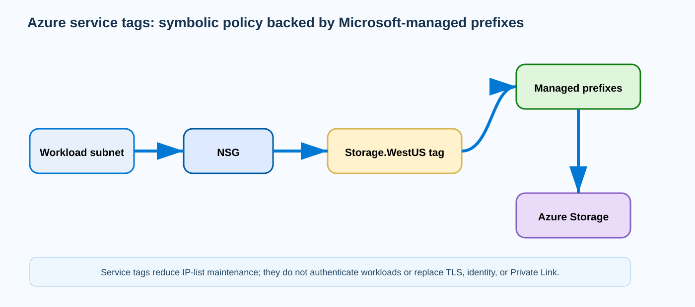
{kind=link}
Prerequisites and implementation
Identify exactly which Azure service and direction the workload requires. Use a regional tag only when the service supports it and the architecture intentionally limits geography. In an NSG, choose a priority that allows the required service before any broader deny. Then add a negative control: verify unrelated Internet destinations remain denied. The following pattern allows HTTPS from a workload subnet to a Storage service tag while a later deny rule blocks generic Internet egress.
az network nsg rule create -g <rg> --nsg-name <nsg> \
-n Allow-Storage-WestUS-Https --priority 200 --direction Outbound \
--access Allow --protocol Tcp \
--source-address-prefixes VirtualNetwork \
--destination-address-prefixes Storage.WestUS \
--destination-port-ranges 443
az network nsg rule create -g <rg> --nsg-name <nsg> \
-n Deny-Internet-Egress --priority 400 --direction Outbound \
--access Deny --protocol '*' \
--source-address-prefixes VirtualNetwork \
--destination-address-prefixes Internet \
--destination-port-ranges '*'If the regional tag name is not supported for the selected service, use the documented tag returned by the discovery API instead of inventing a regional suffix. For on-premises review, PowerShell Get-AzNetworkServiceTag -Location <region> exposes the current prefix lists.
Verification
List the NSG rules to confirm priority and symbolic prefix, then test one allowed service endpoint and one unrelated Internet endpoint. IP Flow Verify/NSG diagnostics can prove the Azure rule selection for a specific tuple. For compliance evidence, retrieve the current service-tag prefix set and store the version/change number used at audit time without replacing the symbolic rule.
az network nsg rule list -g <rg> --nsg-name <nsg> -o table
# From an authorized workload:
curl -I https://<storage-account>.blob.core.windows.net/
# Negative test:
curl -I https://example.org/Allow-Storage-WestUS-Https Priority 200 Allow Destination=Storage.WestUS 443
Deny-Internet-Egress Priority 400 Deny Destination=Internet *
Storage TCP/TLS connection: reachable
Unrelated Internet test: deniedTroubleshooting
If the allowed Azure service is blocked, verify the exact service tag, region semantics, NSG association, and priority before replacing the tag with IP addresses. If the workload reaches services outside the intended account, remember that service tags are service-wide network abstractions; implement resource-level controls rather than expecting the NSG tag to identify your subscription. If an on-premises firewall using literal prefixes suddenly blocks service traffic, compare its generated list with the current service-tag discovery data and update automation.
NSG: Allow destination=Storage priority=200
Connection to approved storage account: succeeds
Connection to unrelated storage account: also network-reachablePrivate endpoint network policies: route and filter traffic that would otherwise follow the endpoint /32
Why it matters
Private endpoints deliberately create a direct private path to a PaaS service, and Azure injects highly specific endpoint routes. By default, network policies for private endpoints are disabled on the subnet hosting them, which means NSG and UDR behavior differs from ordinary subnet resources. That default is convenient for simple Private Link adoption but becomes a design constraint when an enterprise wants traffic to a private endpoint inspected by Azure Firewall/NVA or governed by subnet NSGs. Enabling private endpoint network policies is the control that allows those mechanisms to participate.
The route-selection nuance is essential. A private endpoint contributes a /32 route. A broad 0.0.0.0/0 UDR toward a firewall does not automatically override that /32 because longest-prefix match prefers the endpoint route. Microsoft documents that, with private endpoint network policies enabled, a qualifying UDR prefix can override the endpoint path according to the VNet address-space/prefix rules. The practical consequence is that “we already have a default route to the firewall” is not enough evidence that private endpoint traffic is inspected.
Architecture
Consider a client subnet, an Azure Firewall, and a private endpoint subnet. DNS resolves the PaaS FQDN to the private endpoint’s private IP. Without policy/routing changes, Azure’s endpoint route takes the client toward the private endpoint directly. To insert inspection, enable the relevant network policies on the private endpoint subnet and add the documented UDR that causes traffic for the endpoint address/prefix to use the firewall/NVA next hop. The firewall must then have a valid route to return traffic to the private endpoint.
NSG and routing policy are separate. Enabling network policies can enable UDR support, NSG support, or both depending on interface; Azure CLI exposes a boolean enable/disable behavior, while PowerShell/ARM can express selective flags described by Microsoft. If the organization wants routing inspection but not NSG enforcement on the private endpoint subnet, use the supported selective method rather than assuming the CLI boolean is granular. Always test from the real client because local same-VNet route behavior can differ from hybrid/peered path expectations.
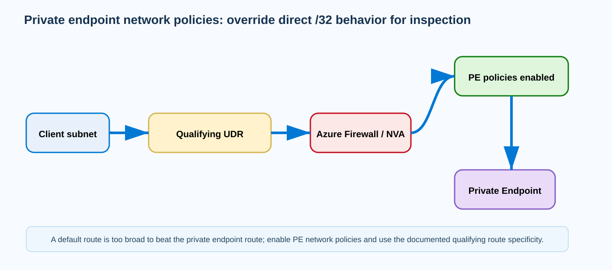
{kind=link}
Prerequisites and implementation
Map the VNet address space, private endpoint subnet, client source networks, firewall IP, and DNS resolution first. Enable network policies on the subnet that hosts the private endpoint. Microsoft’s current Azure CLI command uses --disable-private-endpoint-network-policies false; the name is inverted, so false means policies are enabled. Then add a route table with a qualifying destination prefix and VirtualAppliance next hop. Use the Microsoft private-endpoint inspection guidance for the exact prefix strategy in your topology.
# Enable private endpoint network policies on the PE subnet.
az network vnet subnet update \
--resource-group <rg> --vnet-name <vnet> --name <pe-subnet> \
--disable-private-endpoint-network-policies false
# Create an inspection route using the documented qualifying prefix.
az network route-table route create -g <rg> \
--route-table-name <pe-route-table> -n Inspect-PrivateEndpoint \
--address-prefix <qualifying-pe-prefix-or-/32> \
--next-hop-type VirtualAppliance \
--next-hop-ip-address <firewall-private-ip>Associate the route table with the appropriate source or endpoint subnet according to the inspected-flow design. Avoid a blanket change across every private endpoint until stateful return paths and platform dependencies have been validated.
Verification
First prove DNS returns the private endpoint address. Then inspect effective routes from the client side and verify the endpoint destination resolves to the firewall/NVA next hop rather than a direct private-endpoint route. Confirm the firewall logs the connection and that the private endpoint service still responds. If the NSG portion is enabled, use NSG diagnostics on the relevant tuple as separate evidence.
az network vnet subnet show -g <rg> --vnet-name <vnet> -n <pe-subnet> \
--query privateEndpointNetworkPolicies -o tsv
az network nic show-effective-route-table -g <client-rg> -n <client-nic> -o table
nslookup <private-service-fqdn>PrivateEndpointNetworkPolicies: Enabled
DNS answer: 10.50.20.4
Effective route to 10.50.20.4: VirtualAppliance 10.50.0.4
Azure Firewall log: Allow client -> 10.50.20.4:443
Application: HTTP 200Troubleshooting
If effective routes still show the direct private-endpoint route, verify network policies are enabled and the UDR satisfies the documented prefix constraints; a default route is too broad to win longest-prefix match. If the firewall sees the forward flow but the application times out, inspect the firewall’s route to the endpoint and stateful return path. If DNS still resolves the public service address, fix DNS before troubleshooting UDRs—the packet is not targeting the private endpoint at all.
PrivateEndpointNetworkPolicies: Disabled
DNS: service -> 10.50.20.4
Client effective route 10.50.20.4/32: InterfaceEndpoint / direct
UDR 0.0.0.0/0 -> AzureFirewall exists
Firewall log: no matching flowAzure Bastion Shareable Links: temporary browser access without Azure portal access
Why it matters
Sometimes a vendor, contractor, or short-term operator needs RDP/SSH access to one Azure VM but should not receive Azure portal access or broad subscription permissions. Bastion Shareable Links addresses that workflow by generating a link to a target VM/VMSS through an existing Azure Bastion deployment. The user opens the link in a browser and authenticates to the target operating system. The link does not contain VM credentials. This separates Azure control-plane access from guest login while keeping the network path on the Bastion private-access model.
The feature is powerful because a URL becomes an access-enablement object, so governance matters. Current Microsoft guidance requires Standard SKU, supports expiration, and documents scale/architecture limits: shareable links are not supported over Virtual WAN, are not supported for cross-tenant peered-VNet scenarios, and have per-Bastion limits for stored links and concurrent create/delete requests. Treat links like temporary access artifacts: create them for a specific resource and lifetime, deliver them securely, monitor use, and delete/revoke them when the support window closes.
Architecture
The temporary operator reaches the Bastion shareable URL over HTTPS. The link takes the user to a Bastion-hosted connection page without requiring Azure portal navigation. The user then supplies the VM’s RDP/SSH credentials or key. Bastion connects to the target VM over its private IP path. The VM does not need a public IP. Network controls on AzureBastionSubnet, the target subnet/NIC, and the guest still determine whether the underlying RDP/SSH session can be established.
The link is therefore neither a password nor an NSG bypass. If the target VM’s NSG blocks the Bastion-originated management port, the link can be active and still fail. Likewise, deleting the VM or making the target unreachable invalidates the practical use of the link even if the link entry remains visible for audit. Microsoft documents RBAC actions for creating, reading, and deleting shareable links; delegate those actions narrowly instead of granting Owner to support staff.
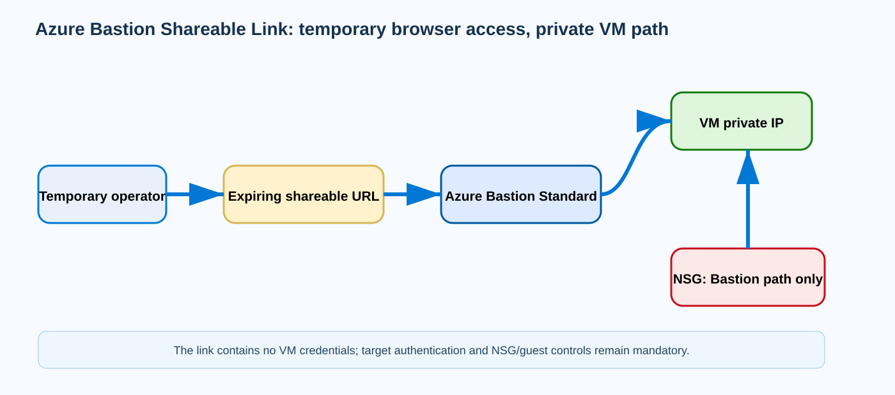
{kind=link}
Prerequisites and implementation
Deploy Bastion in the supported topology and use Standard SKU. Enable the Shareable Link feature in Bastion configuration. Verify the target VM is in the Bastion VNet or a directly supported peered VNet, and confirm the Bastion-to-target NSG rules permit the chosen management protocol. Grant only the shareable-link RBAC actions to administrators who need to create/delete links. Microsoft’s current public workflow creates the link in the portal; the documentation exposes the underlying Microsoft.Network/bastionHosts/*ShareableLinks/action permissions, but it does not present a simple general-purpose Azure CLI create-link command.
# Inspect Bastion tier/configuration from CLI.
az network bastion show -g <rg> -n <bastion> \
--query "{sku:sku.name,provisioningState:provisioningState}" -o json
# Verify target VM has no dependency on a public IP.
az vm show -g <vm-rg> -n <vm> -d \
--query "{privateIp:privateIps,publicIp:publicIps}" -o json
# Shareable-link creation/deletion: use the current Azure portal/REST
# workflow documented by Microsoft; do not invent an az network bastion
# subcommand that the CLI does not expose.When creating the link, set an expiration aligned to the support window. Send the link and guest credentials through separate controlled channels. After work completes, delete the link instead of leaving it active until an arbitrarily distant expiration.
Verification
Verify Bastion is Standard and the link status is Active with the intended expiration. Test from a browser that is not signed into the Azure portal: the link should open a Bastion connection page and request target authentication. A successful login should reach the VM private IP without a public IP. Confirm the operator cannot browse unrelated Azure resources merely because the link works.
Bastion SKU: Standard
Shareable Link feature: Enabled
Link status: Active
Expiration: 2026-09-09T18:00:00Z
Target VM private IP: 10.60.4.10
Target VM public IP: null
Browser -> link -> credential prompt -> RDP/SSH session succeedsTroubleshooting
If the link opens but VM login fails, separate URL validity from target connectivity. Confirm the link has not expired, the VM still exists, and Bastion can reach the management port through NSG and guest firewall. If the feature cannot be enabled, verify Standard SKU and unsupported topology constraints such as Virtual WAN or cross-tenant peering. If administrators can view links but cannot create/delete them, inspect the specific Bastion shareable-link RBAC actions rather than assigning broad subscription roles.
Shareable link: Active
Browser page: loads
Target VM: 10.60.4.10
NSG effective rule: Deny TCP/22 from AzureBastionSubnet
Session: connection timeoutAzure Firewall Threat Intelligence: reputation filtering before normal rule processing
Why it matters
Traditional firewall rules answer whether traffic is allowed by configured addresses, ports, protocols, and application policy. They do not inherently know that an otherwise permitted destination has become associated with malware or command-and-control infrastructure. Azure Firewall Threat Intelligence adds Microsoft’s threat-intelligence feed to that decision. It can run Off, Alert only, or Alert and deny. In alert-and-deny mode, high-confidence malicious IP/domain intelligence can block traffic even when a normal network or application rule would otherwise allow it.
The processing order makes this feature operationally important. Microsoft documents that threat-intelligence filtering occurs before NAT, network, and application rules. Therefore, a connection can be denied by threat intelligence before the rule collection you are staring at is evaluated. During an incident, repeatedly changing application-rule priorities will not help if the earlier reputation stage is making the decision. Threat-intelligence logs and mode/allowlist configuration must be part of the firewall troubleshooting checklist.
Architecture
Traffic enters Azure Firewall and is compared to the Microsoft Threat Intelligence feed. In Alert-only mode, the flow is logged as a high-confidence threat match but normal firewall processing continues. In Alert-and-deny mode, the matching flow is blocked and logged. The allowlist provides narrowly scoped exceptions for addresses/ranges and, according to the current threat-intelligence behavior, supported FQDN/domain exceptions. In hierarchical Firewall Policies, mode and allowlist inheritance can constrain what a child policy can do, so enterprise teams should place global security posture at the correct parent level.
Threat Intelligence is not IDPS. IDPS examines traffic/signatures and application behavior; threat intelligence primarily matches known malicious infrastructure reputation. They can complement each other in Premium architectures but generate different evidence. Likewise, threat-intel mode does not replace your explicit allow/deny policy. An unknown destination still proceeds to NAT/network/application rule processing. This makes controlled testing useful: Microsoft provides a test malicious FQDN specifically to validate outbound alerts/blocks without visiting a genuinely malicious site.
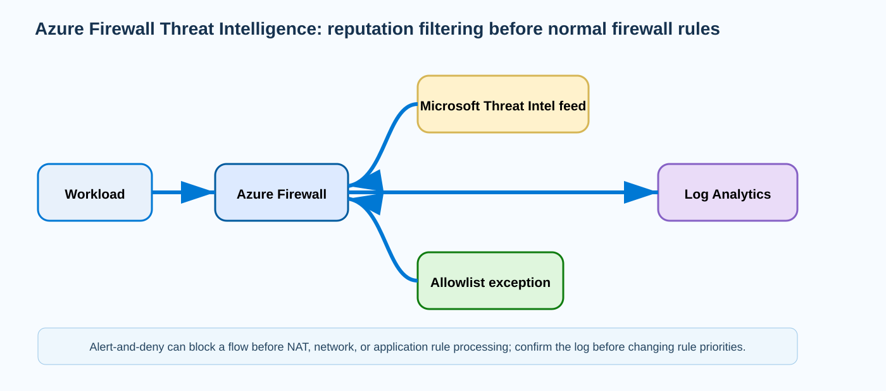
{kind=link}
Prerequisites and implementation
Enable diagnostic logging to Log Analytics before changing from Alert-only to Alert-and-deny so the security team can see exactly what would be blocked. Start in Alert-only during a tuning period, review hits, investigate any business destinations, and create only narrowly justified allowlist exceptions. Then move to Alert-and-deny. For Firewall Policy deployments, inspect and update the policy’s threat intelligence mode with the current Azure CLI/ARM schema; inherited parent policy settings may require the child to use the same or stricter posture.
# Inspect current Firewall Policy threat-intelligence configuration.
az network firewall policy show -g <rg> -n <firewall-policy> \
--query "{mode:threatIntelMode,allowlist:threatIntelWhitelist}" -o jsonc
# Use the current documented Firewall Policy update surface to move
# from Alert to Deny only after reviewing alert telemetry.
# Example intent: threatIntelMode = Deny (Alert and deny in portal wording).
# Query recent firewall logs after the test.
az monitor log-analytics query -w <workspace-id> \
--analytics-query "AZFWThreatIntel | where TimeGenerated > ago(30m)"Azure diagnostic table names can depend on resource-specific versus legacy logging mode; use the table enabled by your diagnostic setting. For a safe functional test, Microsoft documents testmaliciousdomain.eastus.cloudapp.azure.com as an outbound threat-intel trigger.
Verification
In Alert-only mode, reach the Microsoft test domain from a workload that has an otherwise-allowed outbound path and confirm a threat-intelligence alert appears while the mode does not intentionally block. After moving to Alert-and-deny, repeat the controlled test and confirm the firewall records a deny. Verify ordinary approved destinations still follow normal application/network rules. This proves both the pre-rule reputation stage and downstream rule processing.
Threat Intel mode: Alert and deny
Test destination: testmaliciousdomain.eastus.cloudapp.azure.com
Firewall log operation: AzureFirewallThreatIntelLog
Action: Deny
ThreatIntel: high-confidence malicious indicator
Normal approved HTTPS destination: allowed by application ruleTroubleshooting
If a connection is denied even though the application rule allows it, search threat-intelligence logs before modifying rule collections. A threat-intel deny happens earlier. If the match is a verified false positive, create the narrowest allowlist exception and document owner/expiry; do not disable threat intelligence globally. If expected alerts never appear, verify mode is not Off, diagnostic categories are enabled, the test workload traverses the firewall, and the Log Analytics query targets the correct table/category. Parent/child Firewall Policy inheritance can also explain why a child policy setting appears ineffective.
Application rule: Allow Web-Approved
Connection: blocked
Threat Intel log: Action=Deny; destination=203.0.113.44
Threat Intel mode: Alert and deny
Precommit validation record
Validated before publication: 12 lessons; each lesson intentionally exceeds the 700-word substantive threshold; 12 draw.io/SVG pairs; full-width SVG placement; compact desktop typography; no Exam/Interview Takeaways or Summary sections; feature-specific implementation; representative success output; failure output with interpretation; 24 distinct current-run source-role URLs; all candidate URLs/fingerprints compared with six active ledger entries; exactly 50 quiz questions with required 15/13/10/12 distribution.
50-question interactive quiz
Distribution: 15 Hybrid connectivity and architecture · 13 Core networking infrastructure · 10 Routing and traffic management · 12 Security, monitoring, and private service access.